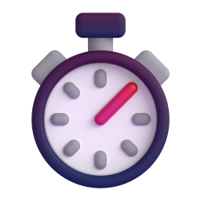
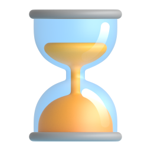

Guia de C++ Básico
Uma introdução detalhada aos fundamentos do C++
Guia de Laços & Vetores C++
Os fundamentos dos laços e vetores C++
Guia de While
Aprofunde-se no laço de repetição while. Extra: este guia contém exercícios
Mais Exercícos de While
Mais alguns exemplos de como usar o while, principalmente em lógica matemática.